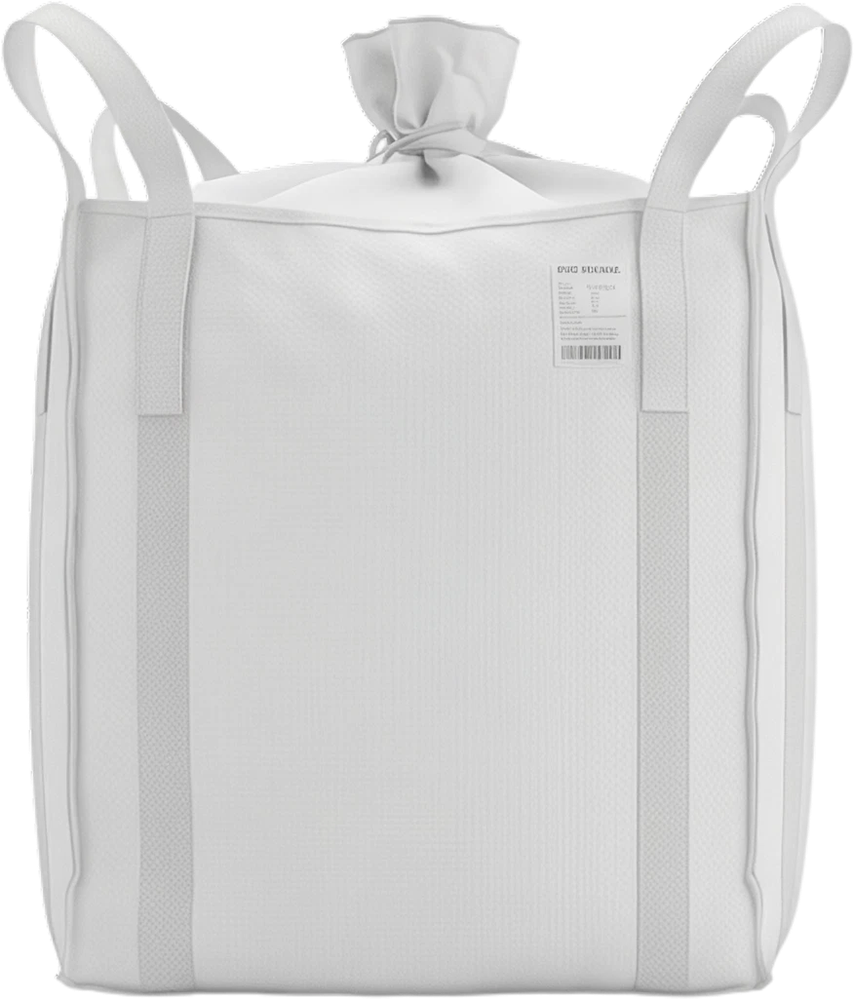

SUROWY LIGNIT
CARBOMAT ECO
Co wyróżnia produkt?
- Forma
- Sypka, gruzełkowata o zróżnicowanej wielkości frakcji.
- Warianty
- CARBOMAT ECO Dodatek do gleby
CARBOMAT ECO Ściółka - Frakcje
- Dodatek do gleby: 0,1–2 mm, 1–2 mm, 2–4 mm
Ściółka: 4–8 mm - pH
- 4,5–5,0 oraz 6,0–6,5
- Zastosowanie
- W formie dodatku do gleby oraz ściółki (mulczu). Produkt przeznaczony do różnych typów gleb i podłoży oraz szerokiego zakresu upraw, po dobraniu odpowiedniego wariantu pH. Wzbogaca glebę w trwałą materię organiczną, poprawia jej strukturę oraz zwiększa pojemność wodną i sorpcyjną. W wariancie o niższym pH może wspomagać naturalne zakwaszanie gleby i podłoży. Stosowany jako ściółka skutecznie zastępuje lub uzupełnia tradycyjne materiały organiczne, takie jak kora czy trociny.
- Opakowania
- 20 l, 500 l, 1000 l, 1500 l